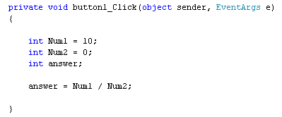
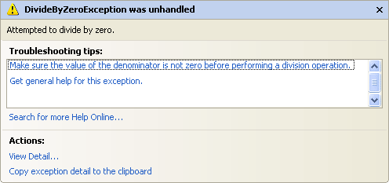
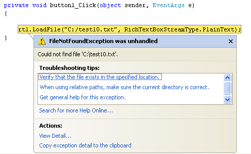

Run Time Errors in C# .NET
<< Continues from the previous lesson
Run-Time errors are ones that crash your programme. The programme itself generally starts up OK. It's when you try to do something that the error surfaces. A common Run-Time error is trying to divide by zero. In the code below, we're trying to do just that:

The programme itself reports no problems when it is started up, and there's no coloured wavy lines. When we click the button, however, we get the following error message (Visual Studio 2012 will have a plainer error message):

Had we left this in a real programme, it would just crash altogether ("bug out"). But if you see any error message like this one, it's usually a Run-Time error. Here's another one. In the code below, we're trying to open a file that doesn't exist:

As the message explains, it can't find the file called "C:/test10.txt". Because we didn't tell C# what to do if there was no such file, it just crashes.
Look out for these type of error messages. It does take a bit of experience to work out what they mean; but some, like the one above, are quite straightforward.
You'll see how to handle errors like this, soon. But there's one final error type you have to know about - Logic Errors.